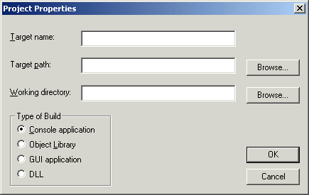
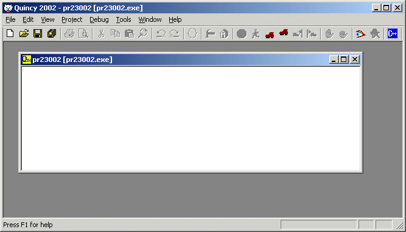
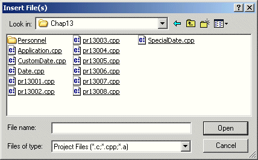
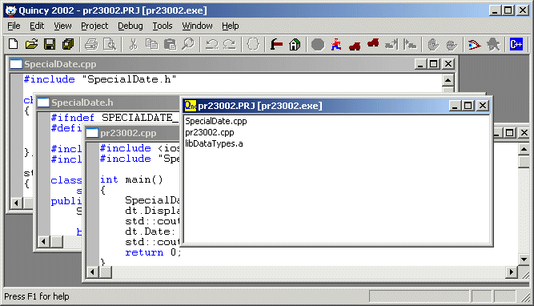
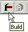
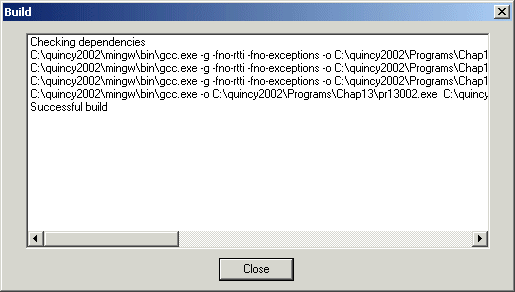
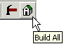

Quincy opens the New dialog shown here.

Quincy opens the Project Properties dialog shown here.

A program that uses more than one translation unit must be built from a Quincy Project, which is a file that lists the source code files and library files that the compiler and linker use to build the executable program.
You also use a Project to build a library file, which is a collection of compiled modules that can be linked into a program.
To establish a project:
Quincy opens the New dialog shown here.
Quincy opens the Project Properties dialog shown here.

(You can modify all the project properties except for its path by choosing the Properties command on the Project menu when the project file is open in Quincy.)
A project is a document, and Quincy displays it alongside of the source code documents in the MDI window. Here is an empty project document.


If the Project file was saved earlier, Quincy writes the current version over the old one. If the Project file is a new one, Quincy opens the Save As dialog box shown above.
A Project file consists of a list of source code files and, optionally, library files. The source code files must be in the same folder with the Project file. The library files can be elsewhere.
To add a file to a Project.
The order of the files is important when you use libraries that refer to each other's object files. The linker makes only one pass. If you have circular references, you might need to list a library file more than once in the Project file.
Quincy opens the Insert File(s) dialog shown here.

Select one or more files from the list. If you are adding C or C++ source files, they must be in the same folder that contains the Project file. If you are selecting a library file, which has the extension .A, you can get it from any folder as long as Quincy's options have been set to permit the linker to find the library.
Here is a project file with some source code files added. Quincy has the source code files open behind the project file, too.

To delete files from a Project:
Quincy asks if you really want to delete the files.

This procedure is a conditional "make" operation, which means that Quincy recompiles the source code files that have changed since the previous build. During the build operation, Quincy displays its status in the Build dialog shown here.

If any of the compile operations has errors, the Build dialog displays those errors as explained in Unsuccessful Build. You can double click an error message to open the source code file in the editor and position the insertion cursor on the line of source code that produced the error.

This procedure recompiles all the source code files listed as part of the project and then links the executable target or builds the library target if there were no errors.